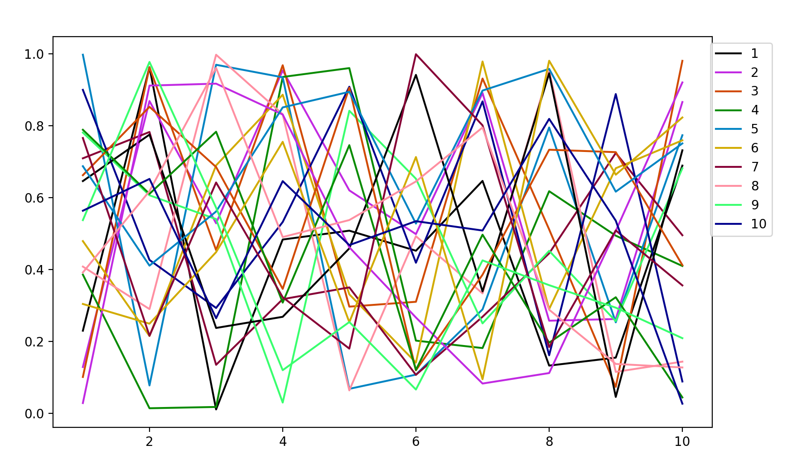

Color Scales
Generating distinguishable colors
distinguishable_colors() generates n maximally distinguishable colors in LCHab space. A seed color or array of seed colors can be provided, and the remaining colors will be chosen to be maximally distinguishable from the seed colors and each other.
distinguishable_colors(n::Integer, seed::Color)
distinguishable_colors{T<:Color}(n::Integer,seed::AbstractVector{T})By default, distinguishable_colors chooses maximally distinguishable colors from the outer product of lightness, chroma, and hue values specified by lchoices = range(0, stop=100, length=15), cchoices = range(0, stop=100, length=15), and hchoices = range(0, stop=340, length=20). The set of colors that distinguishable_colors chooses from can be specified by passing different choices as keyword arguments.
distinguishable_colors{T<:Color}(n::Integer, seed::AbstractVector{T};
transform::Function = identity,
lchoices::AbstractVector = range(0, stop=100, length=15),
cchoices::AbstractVector = range(0, stop=100, length=15),
hchoices::AbstractVector = range(0, stop=340, length=20)
)Distinguishability is maximized with respect to the CIEDE2000 color difference formula (see colordiff in Colorspaces). If a transform function is specified, color difference is instead maximized between colors a and b according to colordiff(transform(a), transform(b)).
Color arrays generated by distinguishable_colors are particularly useful for improving the readability of multiple trace plots. Here’s an example using PyPlot:
using PyPlot, Colors
vars = 1:10
cols = distinguishable_colors(length(vars)+1, [RGB(1,1,1)])[2:end]
pcols = map(col -> (red(col), green(col), blue(col)), cols)
for i = 1:length(vars)
plot(1:10, rand(10), c = pcols[i])
end
legend(vars, loc="upper right", bbox_to_anchor=[1.1, 1.])
To ensure that the generated colors stand out against the default white background, white (RGB(1,1,1)) was used as a seed to distinguishable_colors(), then dropped from the resulting array with [2:end].
Colors.distinguishable_colors — Function.colors = distinguishable_colors(n, seed=RGB{N0f8}[];
dropseed=false,
transform=identity,
lchoices=range(0, stop=100, length=15),
cchoices=range(0, stop=100, length=15),
hchoices=range(0, stop=342, length=20))Generate n maximally distinguishable colors.
This uses a greedy brute-force approach to choose n colors that are maximally distinguishable. Given seed color(s), and a set of possible hue, chroma, and lightness values (in LCHab space), it repeatedly chooses the next color as the one that maximizes the minimum pairwise distance to any of the colors already in the palette.
Arguments
n: Number of colors to generate.seed: Initial color(s) included in the palette.
Keyword arguments
dropseed: if true, theseedvalues will be dropped. This provides an easy mechanism to ensure that the chosen colors are distinguishable from the seed value(s). When true,ndoes not include the seed color(s).transform: Transform applied to colors before measuring distance. Default isidentity; other choices includedeuteranopicto simulate color-blindness.lchoices: Possible lightness valuescchoices: Possible chroma valueshchoices: Possible hue values
Returns a Vector of colors of length n, of the type specified in seed.
Generating a range of colors
The range() function has a method that accepts colors:
range(start::Color; stop::Color, length=100)
This generates n colors in a linearly interpolated ramp from start to stop, inclusive, returning an Array of colors.
julia> c1 = colorant"red"
RGB{N0f8}(1.0,0.0,0.0)
julia> c2 = colorant"green"
RGB{N0f8}(0.0,0.502,0.0)
julia> range(c1, stop=c2, length=43)
43-element Array{RGB{N0f8},1} with eltype RGB{FixedPointNumbers.Normed{UInt8,8}}:
RGB{N0f8}(1.0,0.0,0.0)
RGB{N0f8}(0.976,0.012,0.0)
RGB{N0f8}(0.953,0.024,0.0)
RGB{N0f8}(0.929,0.035,0.0)
RGB{N0f8}(0.906,0.047,0.0)
⋮
RGB{N0f8}(0.094,0.455,0.0)
RGB{N0f8}(0.071,0.467,0.0)
RGB{N0f8}(0.047,0.478,0.0)
RGB{N0f8}(0.024,0.49,0.0)
RGB{N0f8}(0.0,0.502,0.0) Weighted color means
The weighted_color_mean() function returns a color that is the weighted mean of c1 and c2, where c1 has a weight 0 ≤ w1 ≤ 1.
For example:
julia> weighted_color_mean(0.5, colorant"red", colorant"green")
RGB{N0f8}(0.502,0.251,0.0)Colors.weighted_color_mean — Function.weighted_color_mean(w1, c1, c2)Returns the color w1*c1 + (1-w1)*c2 that is the weighted mean of c1 and c2, where c1 has a weight 0 ≤ w1 ≤ 1.
Most saturated color
The MSC(h) function returns the most saturated color for a given hue h (defined in LCHuv space, i.e. in range [0, 360]). Optionally the lightness l can also be given, as MSC(h, l). The function calculates the color by finding the edge of the LCHuv space for a given angle (hue).
Colors.MSC — Function.MSC(h)
MSC(h, l; linear=false)Calculate the most saturated color in sRGB gamut for any given hue h by finding the corresponding corner in LCHuv space. Optionally, the lightness l may also be specified.
Arguments
h: Hue [0,360] in LCHuv spacel: Lightness [0,100] in LCHuv space
Keyword arguments
linear: If true, the saturation is linearly interpolated between black/ white andMSC(h)as the gamut is approximately triangular in L-C section.
MSC(h) returns an LCHuv color, but MSC(h, l) returns a saturation value. This behavior might change in a future release.